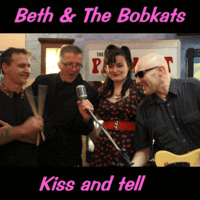

Beth and the Bobkats - Kiss and Tell (Album, 2013)
01 - Big Bad Handsome Man (2:34)
02 - These Boots Are Made for Walkin' (3:03)
03 - Martha Bloom (2:58)
04 - Never Give Up (2:57)
05 - Drug Store Rock and Roll (2:15)
06 - I Love a Man (2:33)
07 - Let's Elope Baby (2:16)
08 - You're Gonna Miss Him (2:15)
09 - The Dualist (2:49)
10 - Tainted Love (2:56)
11 - Kiss and Tell (4:20)
12 - Mood Dog (2:58)
13 - Louie (3:23)
14 - Mondays (1:57)
15 - Spacey (3:06)
16 - Leavin' Again (3:47)
17 - Billy (2:16)
18 - Mr Motty (3:05)
19 - Walk My Way (3:01)
20 - Rock Me Daddy (3:01)
© Nervous Records :: [Digital]
Notes
United Kingdom, England, Liverpool.
Pete Morley - Guiar
Paul - Bass
Ian - Drums
Beth - Vocals
All songs are written-by (there and further: "written-by" or "credited to") Pete Morley. But six tracks are covers.
"Big bad handsome man" is written-by May (Chrysalis Music)
"Drug store rock and roll" is written-by Janis Martin (Sony/ATV Music)
"Let's elope baby" is written-by Griffin (Chappell-Morris)
"These boots are made for walkin'" is written-by Hazlewood (Marapa Music)
"You're gonna miss him" is written-by Kunnas (El Toro Music)
"Tainted love" is written-by Cobb (Burlington Music)
reference information: Discogs®
Review
050/366 (Project 366)
Honey honey honey.
All songs are about really woman's charm! Loveliness of elegant pop diva and sparkle of twirl-a-twist sound.
Perhaps this is more fiftees / sixtees Rock'n'Roll. However, I can even call it as something like Rockin' Pop or even Poppin' Roll (or in a normal way - something like Country pop / rock)! With Rockabilly dressing occasionally, of course.
The first track is a women's lovely intimate and soulful story. Sweet gentle sound. Sensual as it should! A good start. With the second track "These Boots Are Made for Walkin" - rockabilly comes with stylish and mettle rustic sound. Honky as tonky and lonesome as languid guitars. This track, like the previous one, is a cover version of famous hit. Quality performance, but without something as amplification features. The value in the fame of the song. The third track is impressive. It sounds very exciting and stunningly. Feels the sensation of desirable sound and a bit tragic voice. And a feeling of desire to listen to this relative simplicity and fruitiness of clinking guitar. Time for rockin' bop with the next track. If there was a feeling of boredome before.... well.. "Never Give Up" then. And something fresh sensed. Voice is very sweet. The melody is fine. But something is missing to completely get groove up. Although you want to be in a good mood - it is a bit tricky to ride this wave. Jumpin', boppin'. Pretty track for female vocal and easiness sensations. Then three tracks suitable in mood and wave. First one (Drug Store Rock and Roll) is all in its tittle. Second one ("I Love a Man") is tender. And third one ("Let's Elope Baby") is almost a rural motive. Both with bumpy tune that is perfectly matches Rockabilly side of songs. Bop Bop Bop Bop Bop
Babbling guitars, drums and doublebass. Just grace and classy. Eight track ("You're Gonna Miss Him") oh yeah. Story love great with astonishing guitar arrangements. Then ("The Dualist") twangy ballading tune. Goes be tasty intrumental of rollin' and rockin' sound. That is pretty suitable even for some forms of surf. Greatest tune. Largely because of such a cool track - next cover composition ("Tainted Love") sounds especially neat and just great. I want to strum in the accompaniment. The mood had been created before and continued here into this vortex whirlpool. And with the eleventh track "Kiss and Tell" ridin' wave just still spinning. Although the track is similar to the beginning of the album. And, in general, with the feature of the album, for its style and with the charm of a female voice. Pretty vintage theme in appearance. In a way, even classic. The album is quite long and can make you bored or tire you. But such a country records like "Mood Dog" feed the urge to listen further and very well kept enjoyment. However, songs are quite long for its stability and smoothness. Which, however, is very good for such dance tracks as the next. "Louie" is especially good. There is this cool rhythm walking and cycling. This always sounds cool. And here in such a sweet and melodious song even more so. Particularly with a continues to the tracklist like "Mondays". Very good from an instrumental point of view. And the tone of the vocals fits perfectly. Almost an alternative rock action then, song "Spacey" being again a bit instrumental surf. Pretty abrupt ends of tracks. With the sixteenth song Сountry hillbilly lovin' back although leaving. Modern country pop. It is a pity that it has not been possible for me to understand directly all the lyrics and texts in their entirety. I think that their own songs with a pretty beautiful meaning. The beginning of the songs is also sharp, by the way. But that is exactly what sounds very refreshing. The songs "Billy" and "Mr Motty" are a bit corresponding. With such a pin-up lady sounding. "Walk way" sounds like many other songs. In fact, it displays the style of the artist. Conceptually as many artists like. Potent rockin' end of album.
I did not manage to have physical Vinyls or CDs with these records and my experience is based on Digital release "Kiss and Tell". Thanks to Nervous Records for ability to buy it via all these modern digital channels. And, as a result, hear this tune!